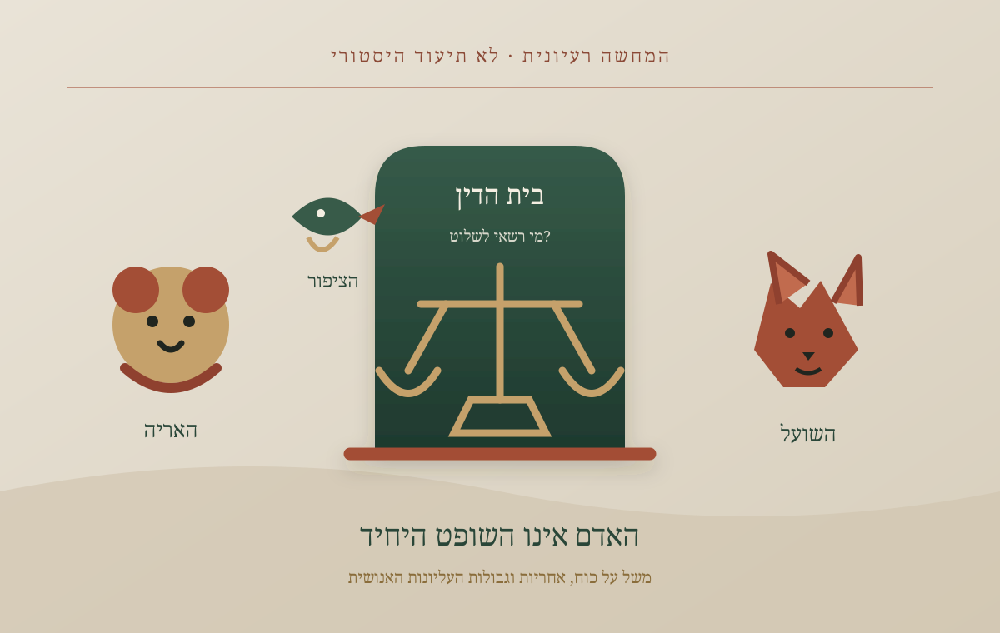

היסטוריה אינטלקטואלית · תרגום · ספרות עברית
האיש שחיבר בין אריסטו לפורים: קלונימוס בן קלונימוס
הוא תרגם לעברית פילוסופיה ומדע מן העולם הערבי, העביר משל על בעלי חיים אל קהל יהודי, וכתב סאטירה שתקפה את החברה — וגם את מחברה. חייו חושפים רשת ים־תיכונית של ידע, שפות ורעיונות, שהייתה מורכבת בהרבה מן הסיפור המקובל על ימי הביניים.

אפשר לדמיין את קלונימוס בן קלונימוס יושב מול כתב יד בערבית ומנסה למצוא בעברית מונח מדויק למושג פילוסופי. אבל אותו אדם, כמעט באותה נשימה, מסוגל לכתוב חיבור מוסרי מלא משחקי לשון, לחבר פרודיה על התלמוד לכבוד פורים, ולתאר בעלי חיים העולים לבית דין ותובעים את האדם על ניצולם. אין כאן שלושה אנשים שונים, אלא מלומד אחד שפעל בכמה זירות תרבותיות בעת ובעונה אחת.
רבי קלונימוס בן קלונימוס נולד בארל שבפרובאנס בשנת 1286 או 1287, ומת ככל הנראה לאחר 1328; מעבר לשנה הזאת המקורות אינם מספקים לנו ביוגרפיה רציפה. הוא למד תורה, שפות ופילוסופיה, נע בין ארל, אביניון, ברצלונה, רומא ונאפולי, והיה קשור גם לחצרו של רוברט מאנז'ו, מלך נאפולי. הפרטים המדויקים של מסעותיו ושליחותיו אינם תמיד ודאיים, אבל התמונה הכללית ברורה: הוא לא היה חכם שישב כל חייו בבית מדרש מקומי, אלא אינטלקטואל נייד שפעל בתוך רשת של קהילות, חצרות ומרכזי לימוד. הביוגרפיה המחקרית ב־אנציקלופדיה יודאיקה מתארת את מסלולו ואת מגוון עבודותיו, אך גם מבהירה שחלק מן התאריכים והייחוסים נותרו מסופקים.
העברית לא רק קיבלה ידע — היא עיבדה אותו
כדי להבין את חשיבותו צריך להתרחק מעט מן הביוגרפיה. במאות השלוש־עשרה והארבע־עשרה התפתחה בפרובאנס פעילות תרגום רחבת היקף של ספרי מדע ופילוסופיה מערבית־ערבית לעברית. יהודים שחיו באירופה הנוצרית יכלו כך לקרוא בעברית יצירות שנכתבו בערבית, ובהן פרשנויות של הוגים מוסלמים לאריסטו. זו לא הייתה העברה פשוטה של "חוכמת יוון" מן המזרח למערב: הידע עבר גלגולים רבים, תורגם, פורש, קיבל מושגים חדשים ולעיתים שינה צורה. ההיסטוריון סטיבן הארווי מסביר בפרק Arabic into Hebrew כי מפעל התרגום הזה היה תנאי מרכזי לפריחת הפילוסופיה והמדע בקרב יהודי מערב אירופה בימי הביניים המאוחרים.
קלונימוס היה אחד המתרגמים החשובים של הדור המאוחר במפעל הזה. בשנים 1313–1317 תרגם בארל פירושים של אבן רושד — הוא אברואס — לכתבי אריסטו, ובהם חיבורים בפיזיקה, במטפיזיקה ובלוגיקה. הוא עסק גם בכתבים של גלנוס ברפואה, בארכימדס בגאומטריה, בתלמי באסטרונומיה ובניקומכוס בחשבון. אלה לא היו נושאים צדדיים: הם היו חלק מן הידע שבאמצעותו מלומד בן התקופה ביקש להבין את הטבע, את גוף האדם ואת מבנה העולם.
אחד המקרים המעניינים ביותר הוא תרגומו משנת 1314 ל"חיבור מניין המדעים" של אל־פאראבי. החיבור ביקש למיין את תחומי הידיעה ולתאר את היחסים ביניהם. אלא שקלונימוס לא הסתפק בהעברה מילולית: לפי חוקר הפילוסופיה של ימי הביניים מאורו זונטה, הוא הוסיף לדיון העברי תחומים כגון רפואה, אלכימיה ומאגיה, שלא הופיעו באותה צורה במקור הערבי. התוספת מלמדת שהמתרגם היה גם עורך ומסווג. הוא לא רק שאל כיצד אומרים בעברית את מה שכבר נכתב בערבית, אלא גם מה ראוי להיכלל במפת הידע של הקורא העברי. זהו תפקיד קרוב יותר לעבודתו של עורך אנציקלופדיה או מתכנן תוכנית לימודים מאשר לדימוי הרומנטי של מתרגם היושב לבדו ומחליף מילה במילה. ראו את הדיון ב־אנציקלופדיה לפילוסופיה של סטנפורד.
כאן מתגלה קשר עמוק בין תרגום לבין הפילוסופיה של המדע. תחום ידע אינו רק אוסף של עובדות; הוא גם מערכת של גבולות: מה נחשב מדע, אילו שאלות שייכות אליו, ואילו שיטות נחשבות לגיטימיות. כאשר קלונימוס מוסיף תחומים למיון של אל־פאראבי, הוא משתתף בוויכוח על המבנה של הידע עצמו. העברית אינה כלי שקוף שממתין לקבל תוכן זר. היא נעשית מרחב שבו ידע מסודר מחדש, וממילא גם משתנה.
כאשר בעלי החיים תובעים את האדם
הדוגמה המפתיעה ביותר למעבר בין תרבויות נמצאת דווקא מחוץ לספרי הפילוסופיה. קלונימוס תרגם לערבית־עברית את "איגרת בעלי החיים", חיבור שמקורו בקורפוס האנציקלופדי של "אחי הטוהר" — חוג מלומדים שפעל בעולם האסלאמי במאה העשירית. לפי המקור הביבליוגרפי, התרגום העברי נעשה בשנת 1316. העלילה מתארת משפט שבו בעלי חיים תובעים את בני האדם על שיעבודם ועל היחס האלים כלפיהם. בעלי החיים מקבלים רשות לדבר, מציגים טענות, והאדם נדרש להצדיק את הטענה שהוא נעלה מהם וזכאי לשלוט בהם. במהדורה האנגלית המחקרית של המכון ללימודי אסמאעיליה נקרא החיבור The Case of the Animals versus Man Before the King of the Jinn.

המשל הזה מחבר בין ספרות, פוליטיקה ואתיקה של בעלי חיים. הוא משתמש בבית דין — מוסד אנושי מובהק — כדי להפוך את יחסי הכוח: האדם אינו השופט אלא הנאשם, והחיות אינן רכוש שותק אלא בעלי טענות ואינטרסים. אין צורך להציג את הטקסט כגרסה מוקדמת של תנועת זכויות בעלי החיים המודרנית. הוא נכתב בתוך עולם דתי ופילוסופי אחר, והטיעונים שלו אינם זהים לשפה המשפטית והמדעית של ימינו. ובכל זאת, הוא מציב שאלה שאינה מתיישנת: האם העובדה שמין אחד חזק, חכם או מדבר יותר מעניקה לו זכות בלתי מוגבלת לנצל את כל האחרים?
התרגום העברי גם לא היה העתק מכני. המחקר האנציקלופדי על אגדות בעלי חיים מציין כי בגרסה העברית נוסף לדיון נציג יהודי לצד נציגים אחרים של בני האדם. שינוי כזה ממחיש כיצד תרגום יכול להתאים יצירה לקהל חדש, בלי למחוק את מקורה. קלונימוס העביר לעברית לא רק סיפור, אלא גם אפשרות לקורא יהודי להשתתף בוויכוח שמקורו בעולם האינטלקטואלי המוסלמי.
"אבן בוחן": סאטירה שמתחילה בבית
אבל קלונימוס לא היה רק מתווך של רעיונות זרים. סביב 1322–1323 כתב את "אבן בוחן", חיבור מוסרי־ספרותי רחב שמבקר את החברה היהודית של זמנו. היצירה משלבת פרוזה מחורזת, קטעים שאינם מחורזים, משחקי לשון, ציטוטים מן המקרא ומן התלמוד, והומור שאינו תמיד עדין. אחת הסוגות שהשפיעו עליה היא המקאמה — פרוזה סיפורית מחורזת, עתירת רמזים ומליצות, שהתפתחה בספרות הערבית ואומצה גם בספרות העברית. צור ארליך מציג ב־מאמרו על "אבן בוחן" את מקומה של היצירה במסורת הזאת ואת הדרך שבה היא נעה בין הטפת מוסר לבין לעג עצמי.
קלונימוס עובר בין טיפוסים חברתיים ומקצועיים: עשירים, רופאים, אסטרונומים, מדקדקים, משוררים וחכמי תורה. כל אחד מהם בטוח בחשיבותו, אך הסאטירה חושפת את הפער בין התדמית לבין ההתנהגות. הרופא עשוי להיות יומרני, המדקדק שקוע בפרטים חסרי חשיבות, והמלומד משתמש בידיעותיו כדי לזכות בכבוד ולא כדי לתקן את מידותיו. גם המחבר אינו פטור מן הביקורת. הוא פותח בהודאה שהוא עצמו נוטה לחפש את מומי הזולת, וממשיך לחשוף את חולשותיו. זהו מנגנון ספרותי חכם: המבקר אינו מציג את עצמו כצופה נקי מבחוץ, אלא מכניס את עצמו אל תוך התמונה שהוא מצייר.
אפשר לקרוא את "אבן בוחן" כמעין סוציולוגיה של קהילה קטנה: לא מחקר המבוסס על סקרים ונתונים, אלא תצפית ספרותית על מקצועות, מעמדות, יוקרה, הרגלים והפער שבין ידע למידות. דווקא משום שהיצירה מגזימה ומעוותת לצורך הקומי, היא אינה תיעוד שקוף של המציאות; היא מלמדת אותנו מה המחבר חשב שראוי ללעג, אילו יומרות זיהה סביבו, ואילו נורמות רצה לערער. מחקרו של אהרן גימאני על הביקורת החברתית של קלונימוס מדגיש בין השאר את יחסו לעשירים, לנשים ואת נימת הייאוש שבכתיבתו.
הקטע על היות אישה — ומה מותר לנו להסיק ממנו?
אחד הקטעים המפורסמים ביותר ב"אבן בוחן" נפתח במילים "אוי לי אמי כי ילדתני בן זכר". הדובר מבכה את העובדה שנולד גבר, ומדמיין כיצד היו נראים חייו אילו נולד אישה. הוא מתאר את עול המצוות והלימוד המוטל על גברים, ומנגד מצייר חיי נשים דרך מלאכות הבית, הטוויה, הבישול והציפייה לנישואים. אלא שהדימוי הזה אינו פשוט: חלק מן היתרונות הנשיים מתוארים באירוניה, וחלק מן התיאורים חושפים את מגבלות החיים שהחברה הקצתה לנשים.
הפרשנות לקטע שנויה במחלוקת. חוקרים אחדים ראו בו פרודיה הומוריסטית על תפילות הגברים ועל חלוקת התפקידים בין המינים. אברהם גרוסמן קרא אותו גם כביקורת על מעמד האישה בחברה היהודית של ימי הביניים. חוקרת הספרות טובה רוזן, במאמר שפיט בשם Circumcised Cinderella, טענה שאין להסתפק בתיוג הקטע כסאטירה: הוא מגיב למסורת של ברכת הנשים "שעשני כרצונו", ובוחן את הגבולות התרבותיים של גבריות ונשיות. רוזן גם מצביעה על כך שהטקסט אינו סימטרי: הוא נכתב בידי מלומד גבר ומיועד לקוראים גברים, ולכן גם כשהוא מעניק קול לדמות נשית, הוא עושה זאת מתוך עולם מושגים גברי.
הקריאה המודרנית עשויה לשאול אם הקטע מעיד על חוויה מגדרית שאינה מתיישבת עם זהות גברית. זו שאלה לגיטימית למחקר, אך אין להפוך אותה לקביעה ביוגרפית. אין בידינו יומן אישי, עדות מפורשת או מסגרת מושגית שמאפשרת לקבוע בוודאות מה הייתה זהותו של קלונימוס. מנגד, גם ההכרזה שהכול "רק בדיחה" סוגרת את הטקסט מהר מדי. כוחו של הקטע נובע מכך שהוא משתמש בהיפוך קומי כדי לחשוף עד כמה תפקידים חברתיים, ציפיות דתיות וחוויית הגוף קשורים זה בזה. הוא מאפשר לנו לראות שהשאלות שאנו מכנים היום שאלות מגדר לא הופיעו יש מאין במאה העשרים; אבל אין פירוש הדבר שאפשר להעתיק מושגים בני זמננו אל המאה הארבע־עשרה ללא תיווך היסטורי.
לא גשר בין עולמות, אלא צומת בתוכם
קלונימוס בן קלונימוס אינו חשוב מפני שהיה "היהודי שתרגם את היוונים לאירופה". התיאור הזה גם מצמצם את פועלו וגם משמר סיפור חד־כיווני מדי. הוא פעל בעולם שבו רעיונות יווניים נקראו דרך פילוסופים מוסלמים, תורגמו לעברית, נידונו בקהילות יהודיות, ולעיתים עברו שוב ללטינית. באותו מרחב עצמו נדדו גם סיפורי בעלי חיים, סוגות ספרותיות, נוסחי תפילה, ויכוחים על מוסר ושאלות על מבנה הידע. קלונימוס היה אחד האנשים שחיברו בין התנועות האלה, אך הוא גם שינה אותן בדרכו.
המורשת שלו מזכירה שתרגום אינו פעולה משנית המתרחשת אחרי היצירה. הוא חלק מן היצירה עצמה. מי שמתרגם חייב להחליט מה פירושו של מושג, כיצד לסדר תחומי ידע, איזה דימוי יובן לקורא חדש, ואילו חלקים מן המקור יישארו זרים. קלונימוס עשה זאת כשהעביר את אל־פאראבי לעברית, כשהכניס בעלי חיים אל בית דין יהודי־ספרותי, וכשכתב סאטירה שהפכה את קהילתו — ואת עצמו — למושא ביקורת. העברית שלו לא הייתה תחנה סופית במסלול של רעיונות; היא הייתה מקום שבו הם קיבלו צורה חדשה.
חמישה דברים שכדאי לזכור
- קלונימוס בן קלונימוס נולד בארל סביב 1286–1287, ופעל בפרובאנס, בקטלוניה, ברומא ובנאפולי.
- הוא תרגם לעברית יצירות מדע ופילוסופיה מערבית־ערבית, ובהן פירושים של אבן רושד לכתבי אריסטו.
- בתרגום "מניין המדעים" של אל־פאראבי הוא לא רק העביר טקסט, אלא גם הרחיב את מפת תחומי הידע.
- "איגרת בעלי החיים" מציבה משל שבו בעלי חיים תובעים את בני האדם על ניצול ושיעבוד.
- "אבן בוחן" משלבת ביקורת חברתית, הומור וביקורת עצמית; הקטע על היות אישה נותר פתוח לפרשנויות שונות.
שלוש שאלות למחשבה
- מתי תרגום מפסיק להיות העתקה והופך ליצירה עצמאית?
- האם סיפור שבו בעלי החיים תובעים את האדם משנה את מעמדן המוסרי, או רק משתמש בהן כדי לבקר בני אדם?
- כיצד אפשר לקרוא טקסט מימי הביניים דרך שאלות מגדר עכשוויות בלי למחוק את ההבדלים ההיסטוריים?
לקריאה נוספת
- Mauro Zonta, Influence of Arabic and Islamic Philosophy on Judaic Thought — סקירה מחקרית של נתיבי ההשפעה והתרגום.
- Steven Harvey, Arabic into Hebrew — פרק על מפעל התרגום ועל מקומו של אבן רושד.
- Tova Rosen, Circumcised Cinderella — קריאה מגדרית בקטע מתוך "אבן בוחן".
- The Case of the Animals versus Man Before the King of the Jinn — מהדורה ותרגום מחקריים של המשל הערבי.
- כתבי קלונימוס בן קלונימוס בפרויקט בן־יהודה — גישה ליצירותיו העבריות ולמהדורות דיגיטליות.